PORSCHE TAYCAN TURBO S
2026 - HW EV - 34/250
The Porsche Taycan is an all-electric executive car produced by Porsche since 2019. It is currently available as a sedan although station wagon versions will be offered in the near future. The name "Taycan" roughly translates to "lively young horse" from Turkish, in reference to the horse on Stuttgart's coat of arms in Porsche's logo. The Turbo S, which this casting replicates, is the most powerful trim level featuring 751 BHP.
This casting was originally intended to be released in 2020 along with the rest of Hot Wheels id's Series 2 lineup, but numerous production delays due to the COVID-19 pandemic and poor sales led to a bulk of the original Series 2 cars not being released on schedule. What was intended to be the initial release of the Taycan would resemble the Porsche Taycan Turbo safety car used in the Porsche Carrera Cup Deutschland series. The casting thus debuted in the 2021 mainline without being labeled a New Model.

Porsche Panamera Turbo S E-Hybrid Sport Turismo
2025 - HYBRID SPEED - 4/5
This high-end Porsche Panamera packs a might E-punch with 680 combined hp, an 8-speed automatic gearbox, and a top speed of 192 mph. It's the ideal blend of performance and luxury!

Porsche Carrera GT
2025 - Car Culture: Timeless Icons - 3/5
The Porsche Carrera GT is a high-performance limited production sports car produced by Dr. Ing. h.c. F. Porsche AG. Styled by Harm Lagaay, the Carrera GT was initially unveiled as a concept car at the 2000 Paris Motor Show, using a 5.5L V10 originally built for Porsche's Formula One exploits. The concept was styled by Jason Hill and was so well-received that Porsche made the decision to produce the car. The production version of the car uses a 5.7L M80/01 V10 mated to a 6-speed manual; this is the only road-going Porsche model to use a V10 engine. Production began in 2004 and ended in 2006, with 1,270 cars produced. Today, the car is one of the most highly-collectible Porsche models.

´71 PORSCHE 911
2023 - RETRO RACERS - 126/250
A high–performance sport car worthy of an international spy adventure, this distinctively designed vehicle looks elegant from every angle and boasts a powerful 2.2-litre engine that delivers pure Porsche-driving pleasure. One of the most influential vehicles in automobile history, the 911 racers to the top of every enthusiast’s wish list!

Porsche 911 Carrera RS 3.8
2024 - FAST & FURIOUS - 3/5
The Porsche 911 Carrera RS is a lightweight limited-production version of the 964-generation Porsche 911. It was based on the Carrera Cup race cars used at the time and featured numerous revisions for added performance. The Carrera RS 3.8 was a non-turbo, enhanced version of the Carrera RS, featuring wider bodywork and a 3.8L M64/04 flat-6. A total of 55 were produced in 1993, when production ceased.

Porsche Panamera Turbo S E-Hybrid Sport Turismo
2023 - HW GREEN SPEED - 38/250
This high-end Porsche Panamera packs a might E-punch with 680 combined hp, an 8-speed automatic gearbox, and a top speed of 192 mph. It's the ideal blend of performance and luxury!

PORSCHE 911 RALLYE
2025 - SAFARI MODE - 154/250
The Porsche 911 Dakar is a special limited-production off-road edition of the 992-generation Porsche 911. It features a 3.0L DKKB twin-turbocharged flat-6 driving all four wheels, mated to an 8-speed PDK transmission. The car uses Pirelli Scorpion All Terrain Plus tires and features raised ground clearance. Unveiled at the 2022 Los Angeles Auto Show, 2,500 units are slated to be produced.

PORSCHE 356 OUTLAW
2025 - ULTRA HOTS - 5/8
The Porsche 356 is a sports car produced by Porsche from 1948 to 1965 as their first production road car offering. Designed by Ferry Porsche and Erwin Komenda, the 356 was noted for its light weight and nimble handling. Produced over four series, the 356 A, introduced in late 1955, was the car's first major revision. It was nicknamed "T1" among enthusiasts due to its internal "Type 1" factory designation. Produced from 1955 to 1959, a number of engine choices were available for each trim level, from the 1.3L 506 flat-4 to the 1.6L 616/1 flat-4; all engines were mated to a 4-speed manual. This generation also featured the Speedster, an open-topped version with few fittings and trim pieces. 21,045 were produced.
The Hot Wheels casting is detailed with notches to simulate the ventilation for the rear-fitted engine and a fuel filler cap through the hood. This casting is modeled after a lightly customized 356 A owned by fashion designer Magnus Walker. Initially named the Porsche 356A Outlaw, the "A" in the name was removed in 2020. Certain versions feature a number of base variations with the old and new names.

´71 PORSCHE 911
2026 - NEON SPEEDERS - 8/8
A high–performance sport car worthy of an international spy adventure, this distinctively designed vehicle looks elegant from every angle and boasts a powerful 2.2-litre engine that delivers pure Porsche-driving pleasure. One of the most influential vehicles in automobile history, the 911 racers to the top of every enthusiast’s wish list!

PORSCHE 993 GT2
2025 - NEON SPEEDERS - 8/8
The Porsche 911 GT2 is a high-performance track-focused version of the Porsche 911, initially introduced in 1993. The GT2 was introduced with the 993-generation 911, and as a result is often known as the 993 GT2. Built to comply with homologation requirements for GT2 class racing, the 993 GT2 is powered by a 3.6L M64.60 turbocharged flat-6, mated to a 6-speed manual. Compared to other 911s, the GT2 featured a large rear wing and widened fenders. The car made 424 horsepower when initially released; this would be increased to 444 by production's end in 1998. 57 cars were produced, making the 993 GT2 one of the rarest Porsches of its time.

´78 PORSCHE 935-78
2025 - THE HOT ONES - 7/8
The Porsche 917 LH was the second new model version made in cooperation with the 2017 racing game Project CARS 2, developed by Slightly Mad Studios and published by Bandai Namco Entertainment.
It is based on the real-life Porsche 917 LH, 'Langheck' (Long Tail). Only five 917 LH were made and competed in the endurance racing in the 1970 and 1971 seasons.
The first release of the Hot Wheels 917 LH is a replica of the car #18 driven by Pedro Rodriguez and Jackie Oliver (Chassis: 917-043) at the 1971 24 Hours of Le Mans, despite having the fastest qualifying time and setting a new lap record, they did not complete the race. The car still exists and has been restored to its livery from the previous year (1970), it is on display at the Simeone Foundation Auto Museum.
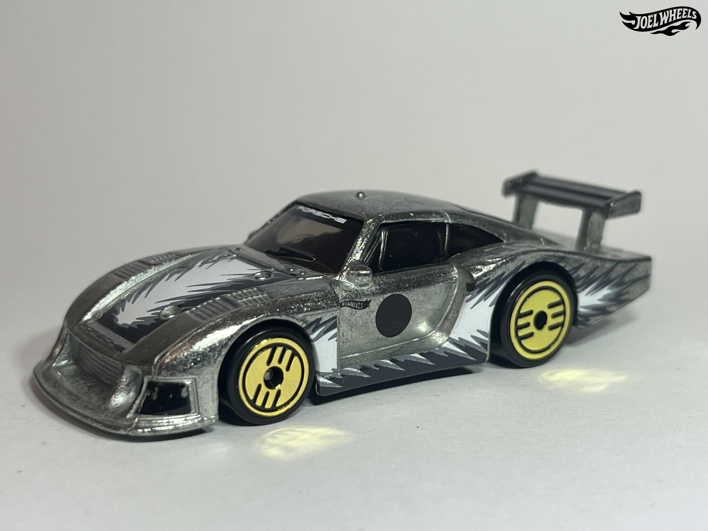
´78 PORSCHE 935-78
2024 - ULTRA HOTS - 4/8
The Porsche 935/78 was the final model of Porsche's 935, produced in 1978 purely for the Le Mans of that year. The 935 was part of the 'Special Production cars'(Group 5).
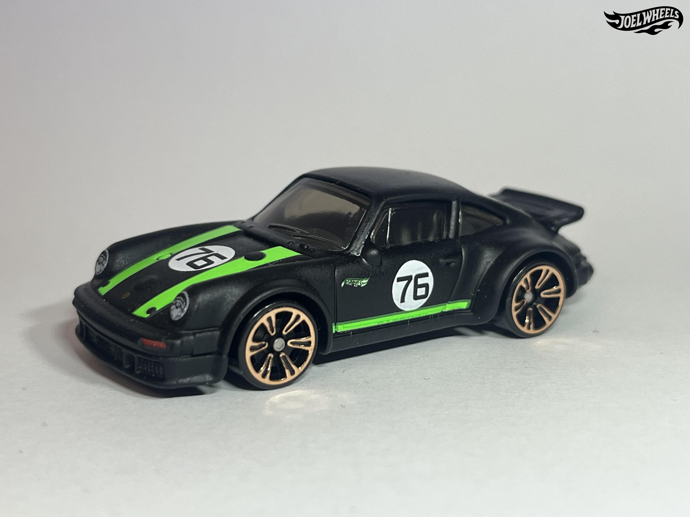
PORSCHE 934 TURBO RSR
2025 - NEON SPEEDERS - 6/8
Several releases of the casting exist with a variation in the casting where the front bumper opening comes with or without a mesh texture.

PORSCHE 911 CARRERA T
2026 - FACTORY FRESH - 15/250
The Porsche 911 Carrera T is a special variant of the 911, intended for driving pleasure. The 992 generation of the 911 Carrera T was introduced in 2022 and features the 3.0L DKCA twin-turbocharged flat-6 as the base 911, but is lighter thanks to the use of lighter materials and most notably uses a 7-speed manual transmission. Introduced for the 2023 model year, prices start at about $143,700.
This casting is based on the 911 Carrera T owned by Hot Wheels Global Head of Design Ted Wu; it features the Sport Chrono and SportDesign packages. Two teddy bears can be found in the passenger seat.

´67 PORSCHE 911 R
2025 - NATIONAL ICONS - 5/5
The Porsche 911 R is a special lightweight homologation version of the original Porsche 911. Designed to take the then newly-released 911 to its limits, the 911 R featured numerous weight-saving measures, such as a fiberglass bodyshell and panels fabricated by Karl Baur, lightweight windows and removal of numerous interior features. The car used the 2.0L 901/22 flat-6 from the 906 and can be distinguished from other 911s by its flared wheel arches. Produced from 1967 to 1968, 24 were produced, including 4 prototypes.
PORSCHE 911 RALLYE
2024 - HW TURBO - 172/250
The Porsche 911 Dakar is a special limited-production off-road edition of the 992-generation Porsche 911. It features a 3.0L DKKB twin-turbocharged flat-6 driving all four wheels, mated to an 8-speed PDK transmission. The car uses Pirelli Scorpion All Terrain Plus tires and features raised ground clearance. Unveiled at the 2022 Los Angeles Auto Show, 2,500 units are slated to be produced.

PORSCHE 911 TURBO CABRIOLET
2025 - THEN AND NOW - 238/250
The Porsche 911 Turbo Cabriolet was a highly-exclusive version of the Porsche 964, produced in extremely limited quantities in 1993. Designed by Ben Dimson, the 911 Turbo Cabriolet was essentially a standard Porsche 911 Carrera 2 cabriolet fitted with the "Turbo-Look" option, codenamed M491, but fitted with some additional modifications; all 911 Turbo Cabriolets were said to have been constructed after being removed from the production line at Zuffenhausen and transported to Porsche Exclusive's Sonderwisch (lit. "special wishes", currently Sonderwunsch) department, led by Rolf Sprenger. Each was said to have been fitted with the 3.3L M30/69 turbocharged inline-6 355hp. Six were produced, making this one of the rarest 964 variants to exist.
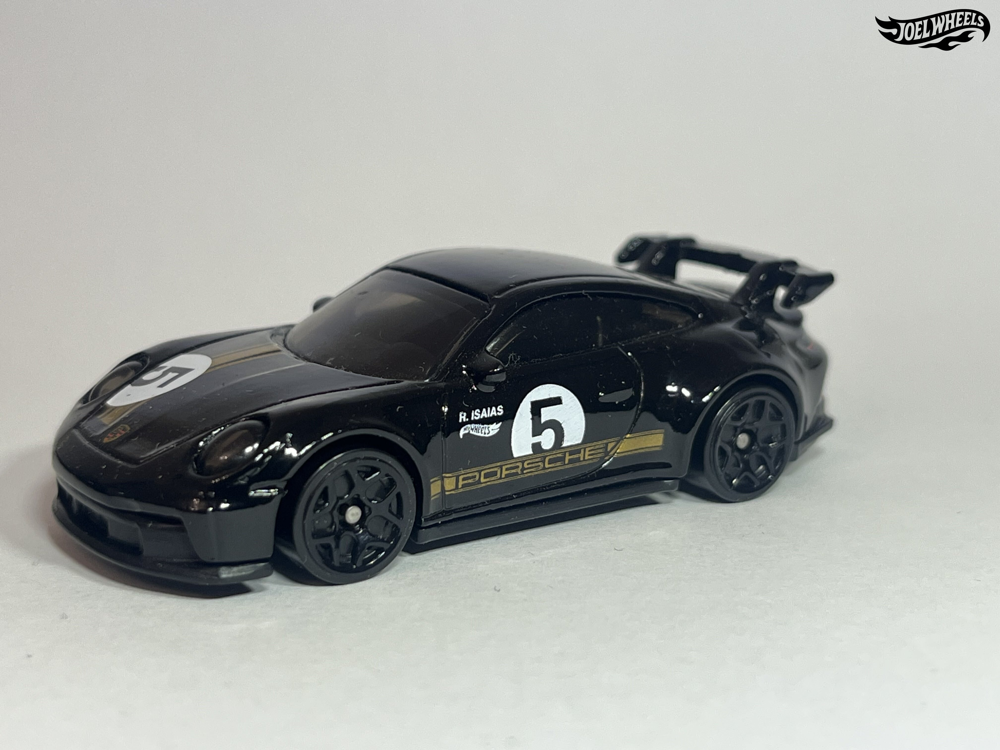
PORSCHE 911 GT3
2025 - HW RACE DAY - 74/250
The Porsche 911 GT3 is a high-performance homologation model of the Porsche 911, sitting above the 911 Turbo but below the GT2, initially introduced in 1999 with the 996 generation. The fourth generation of the GT3, based on the 992 generation of the Porsche 911, was unveiled in February 2021. The car uses the same 4.0L naturally aspriated MA1.76 flat-6 as its predecessor, the 991 version of the GT3, but uprated to produce 510 BHP. Transmission options include a 7-speed dual clutch or a 6-speed manual. A Touring version featuring a retractable wing is also available.
PORSCHE 911 GT3 RS
2025 - FAST & FURIOUS 5-PACK
The Porsche 911 GT3 is a high-performance homologation of the Porsche 911. The second generation of 911 GT3, introduced in 2006, was based on the 997 generation of Porsche 911 and was fitted with a new 3.6L M97.76 flat-6. The 911 GT3 was refined further to become the 911 GT3 RS, unveiled in late 2006. An updated version of the 911 GT3 to coincide with the 997's facelifts, colloquially known as the 997.2 GT3, was introduced in 2009, followed by the GT3 RS in 2010; this GT3 RS would be fitted with a new 3.8L M97.77 flat-6. A more powerful version known as the 911 GT3 RS 4.0 would be introduced in 2011, powered by a 4.0L M97.74 flat-6. Production ended in 2011 with 2,000 997.2 GT3 RS's produced.
The casting was retooled in 2015, losing the plastic wing and having it cast into the body. Mainline releases of this casting also lose the rollcage.
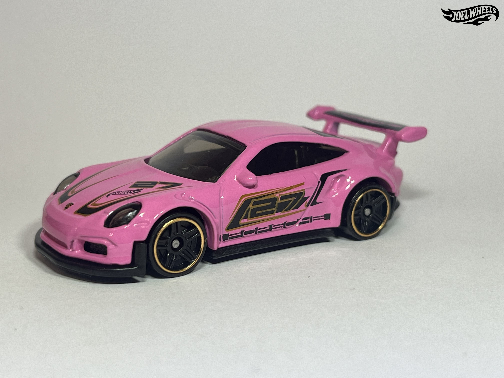
PORSCHE 911 GT3 RS
2025 - THEN AND NOW - 220/250
The Porsche 911 GT3 is a High-Performance variation of the Porsche 911 that Porsche debuted as the 991 Porsche 911 GT3 RS at the Geneva Motor Show in 2015. Fitted with Turbo-styled intakes, in lieu of the intake below the rear wing. The roof is made from magnesium to reduce weight. The interior includes full bucket seats, carbon-fibre inserts, and the Club Sport Package as standard (a bolted-on roll cage behind the front seats). The RS's 4.0-litre unit with 500 hp (373 kW) replaces the previous 3.8-litre engine. Race time on the Nürburgring track is a mere 7 minutes and 20 seconds.
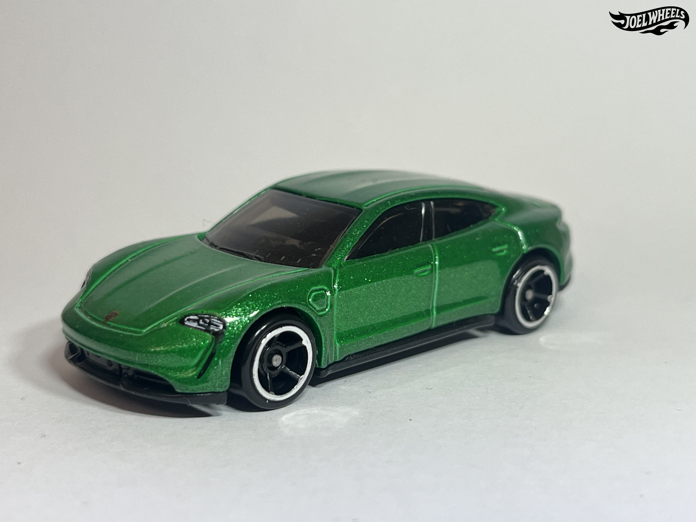
PORSCHE TAYCAN TURBO S
2023 - FACTORY FRESH - 149/250
The Porsche Taycan is an all-electric executive car produced by Porsche since 2019. It is currently available as a sedan although station wagon versions will be offered in the near future. The name "Taycan" roughly translates to "lively young horse" from Turkish, in reference to the horse on Stuttgart's coat of arms in Porsche's logo. The Turbo S, which this casting replicates, is the most powerful trim level featuring 751 BHP.
This casting was originally intended to be released in 2020 along with the rest of Hot Wheels id's Series 2 lineup, but numerous production delays due to the COVID-19 pandemic and poor sales led to a bulk of the original Series 2 cars not being released on schedule. What was intended to be the initial release of the Taycan would resemble the Porsche Taycan Turbo safety car used in the Porsche Carrera Cup Deutschland series. The casting thus debuted in the 2021 mainline without being labeled a New Model.
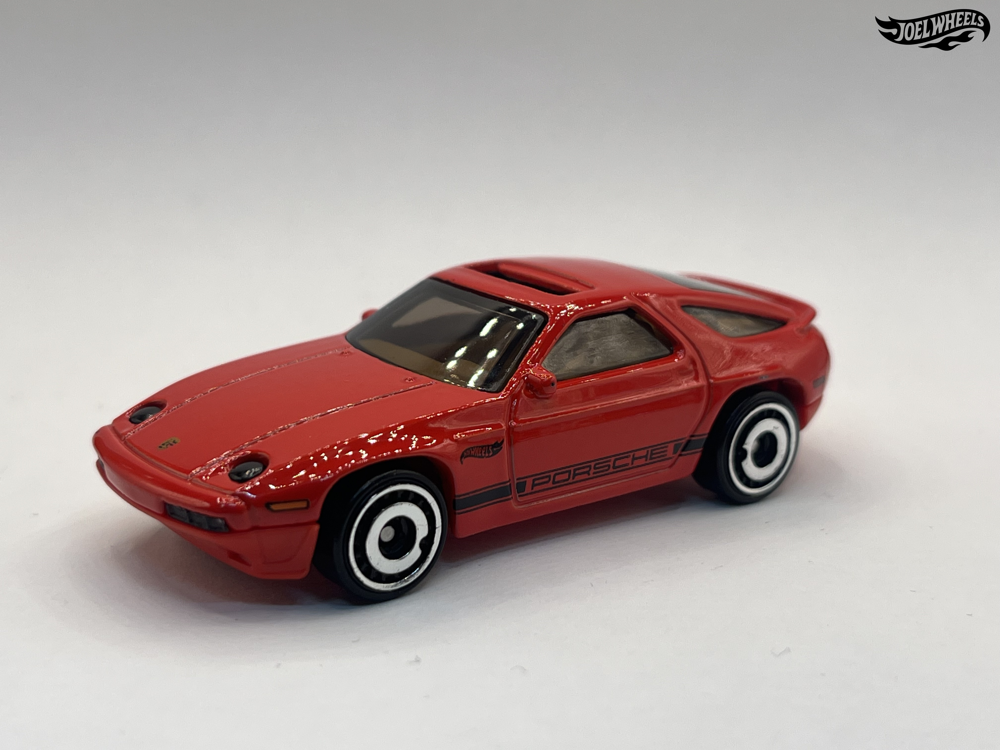
1983 PORSCHE 928S
2025 - MUSCLE MANIA - 250/250
The Porsche 928 is a luxury grand touring sports car produced by Porsche from 1978 to 1995. Designed by Wolfgang Möbius and Anatole Lapine, the 928 was Porsche's flagship model for a time. The original intention of the model was to replace the Porsche 911, although this did not work as planned due to the 911 easily eclipsing the 928 in popularity. 61,056 were produced.
This casting was designed based on the Porsche 928S Safari casting. A pair of sunglasses can be found in the passenger seat.
PORSCHE 904 CARRERA GTS
2024 - HW EXOTICS - 158/250
The Porsche 904 was a racing sports car manufactured by Porsche from 1964 to 1965. Designed by Ferdinand Alexander Porsche, the 904 was Porsche's first sports car since withdrawing from Formula One in 1962. The Carrera GTS, powered by a 2.0L 587/3 flat-4, was introduced in 1963 to compete in the FIA-GT category at various international racing events. 106 chassis were produced for street legal compliance.
The initial livery of this casting is based on chassis 904-005, driven by Antonio Pucci and Colin Davis to victory for Porsche System Engineering in the 1964 Targa Florio.
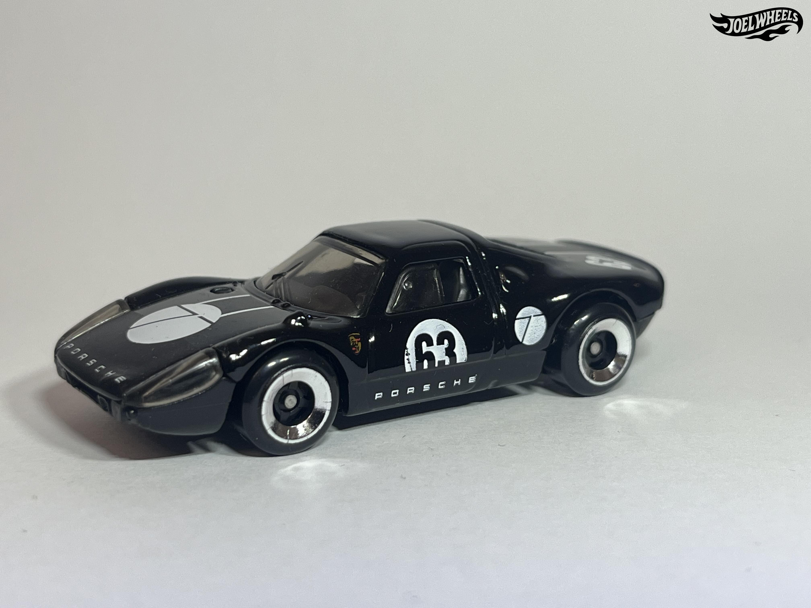
PORSCHE 904 CARRERA GTS
2025 - HW RACE DAY - 100/250
The Porsche 904 was a racing sports car manufactured by Porsche from 1964 to 1965. Designed by Ferdinand Alexander Porsche, the 904 was Porsche's first sports car since withdrawing from Formula One in 1962. The Carrera GTS, powered by a 2.0L 587/3 flat-4, was introduced in 1963 to compete in the FIA-GT category at various international racing events. 106 chassis were produced for street legal compliance.
The initial livery of this casting is based on chassis 904-005, driven by Antonio Pucci and Colin Davis to victory for Porsche System Engineering in the 1964 Targa Florio.
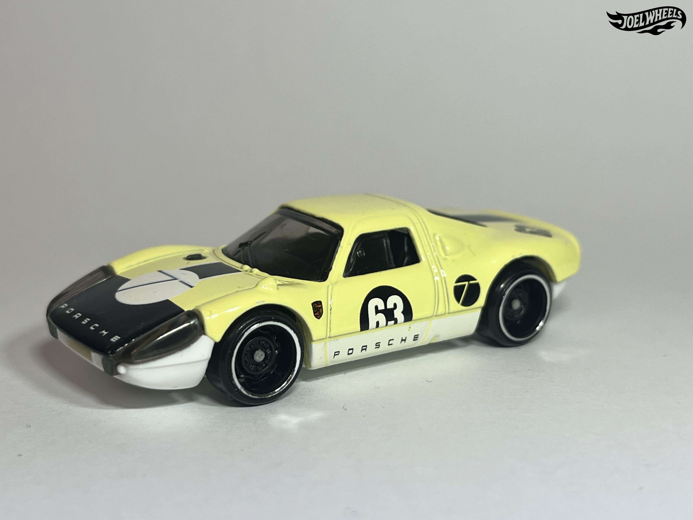
PORSCHE 904 CARRERA GTS
2025 - HW RACE DAY - 100/250
The Porsche 904 was a racing sports car manufactured by Porsche from 1964 to 1965. Designed by Ferdinand Alexander Porsche, the 904 was Porsche's first sports car since withdrawing from Formula One in 1962. The Carrera GTS, powered by a 2.0L 587/3 flat-4, was introduced in 1963 to compete in the FIA-GT category at various international racing events. 106 chassis were produced for street legal compliance.
The initial livery of this casting is based on chassis 904-005, driven by Antonio Pucci and Colin Davis to victory for Porsche System Engineering in the 1964 Targa Florio.
´96 PORSCHE CARRERA
2024 - HW: THE ´90S - 174/250
The '96 Porsche Carrera is a Hot Wheels casting debuted in the 2019 Hot Wheels lineup, under the 'Nightburnerz' mini-series. The real-life 1996 Porsche Carrera was part of the 993-generation (successor to the 964-series) of the Porsche 911, built from 1994-1998. The 993 was the last generation of air-cooled 911s. The Carrera was the more street-oriented version while the 993 GT2 took on the role as the race-derived model. (Named for the GT2 Class of race cars).
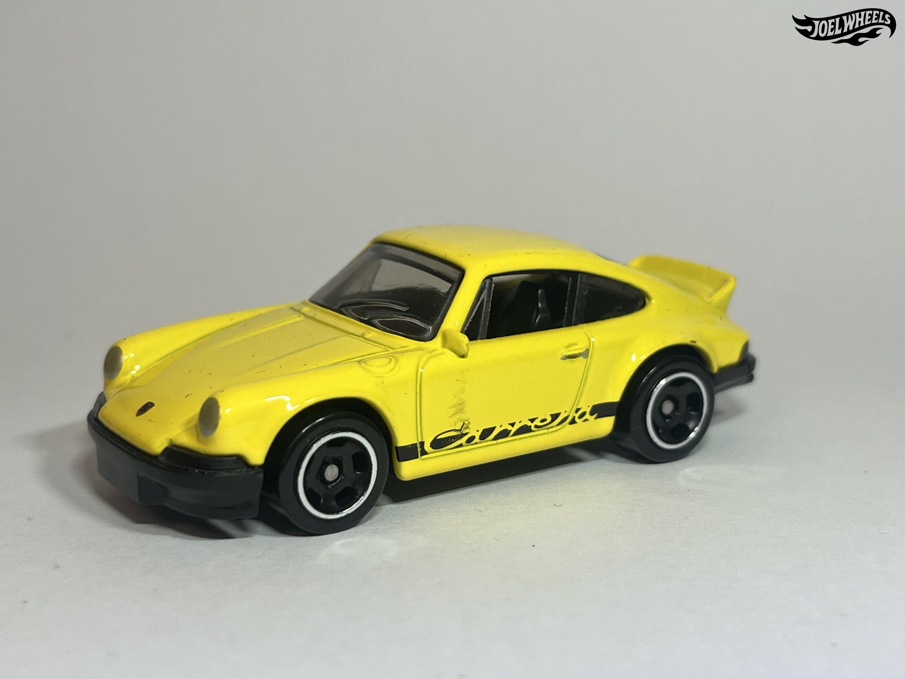
PORSCHE 911 CARRERA RS 2.7
2024 - FACTORY FRESH - 46/250
The Porsche 911 Carrera RS was a homologation special of the original Porsche 911. Designed to allow Porsche to compete in FIA Group 4 competition, the Carrera RS featured a larger 2.7L 911/83 flat-6 making 210 horsepower as well as a ducktail spoiler, larger brakes, stiffer suspension and larger rear wheels. A number of additional versions of the Carrera RS were produced, usually with weight-saving modifications; a later version of the Carrera RS featured a bigger engine. 1,580 were produced, comfortably exceeding the 500 cars required for homologation purposes. In modern times, the Carrera RS is highly valued by collectors and is said to be one of the best 911s ever produced.
PORSCHE 911 CARRERA CLIP
2024 - EXPERIMOTORS - 134/250
This is a keychain version of a Porsche 911 Carrera, in a similar style to the Coupe Clip.
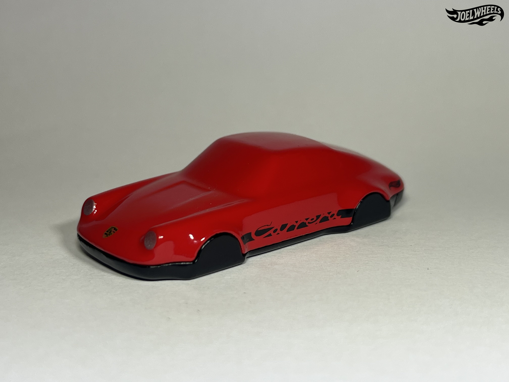
PORSCHE 911 CARRERA CLIP
2025 - EXPERIMOTORS - 187/250
This is a keychain version of a Porsche 911 Carrera, in a similar style to the Coupe Clip.
PORSCHE 911 CARRERA CLIP
2025 - EXPERIMOTORS - 187/250
This is a keychain version of a Porsche 911 Carrera, in a similar style to the Coupe Clip.

PORSCHE 911 TURBO 3.6(964)
2024 - TOONED - 199/250
This casting depicts a 'Tooned version of a Porsche 964, featuring squished up & cartoonish proportions.
The driver's side window is lowered down.
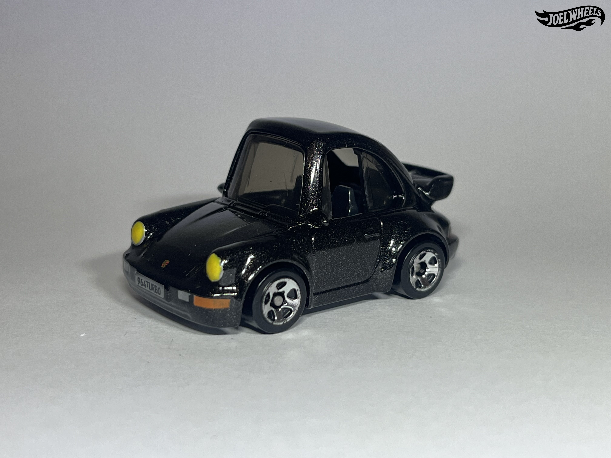
PORSCHE 911 TURBO 3.6(964)
2023 - TOONED - 234/250
This casting depicts a 'Tooned version of a Porsche 964, featuring squished up & cartoonish proportions.
The driver's side window is lowered down.